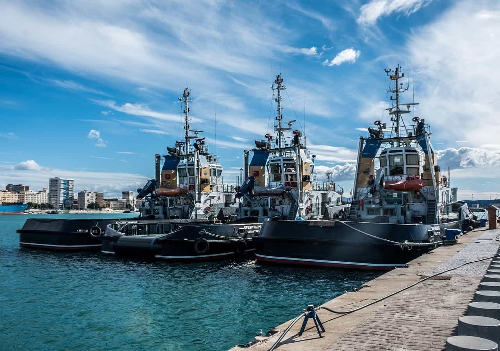
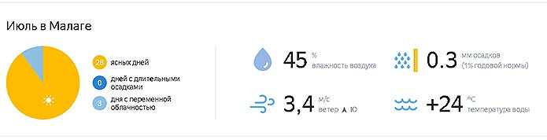
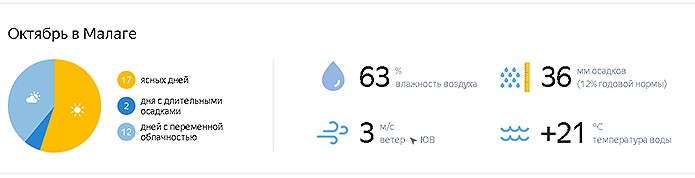
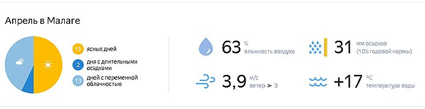
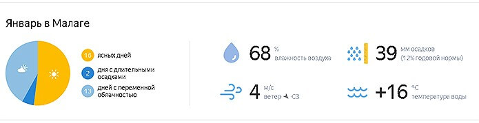

-
Справочная информация
- Постоянное население Малаги сегодня составляет около 570 000 человек. По этому показателю курорт входит в первую шестерку городов страны.
- Разница во времени с Москвой – два часа (точное время здесь отстает от московского).
- Территория занимает 398 кв. км.
- Для въезда, как и в другие регионы Испании, требуется шенгенская виза.
- Как и у остальных административных единиц страны, у Малаги свой флаг и герб.
- Почтовые индексы города в диапазоне от 29001 до 29018.
- Согласно Википедии, географические координаты курорта следующие: широта – 36° 43′ 13″ N ( 36.7202 ), долгота – 4° 25′ 13″ W ( -4.4203 ).
- Часовой пояс: UTC + 1:00, в летнее время – UTC + 2:00.
- Восход солнца (рассвет) летом наступает около 7-00, закат – в 21-30.
-
История Малаги
История делового и туристического центра берет начало в VIII веке до н.э. В это время финикийцы основали на побережье Иберийского полуострова поселение Малага.
В переводе название звучало как «ломтик соленой рыбы».
Через пять столетий власть перешла к римлянам, переименовавшим город во Флавию Маласиту.
В VII веке нашей эры Малагу завоевали арабы. Захватчики построили на новой территории порт, возвели вокруг города стены с огромными воротами, начали развивать торговлю.
К IX веку Малага — столица мусульманского государства, а в XV веке ее присоединили к Кастильской короне.
В XIX веке город пережил настоящий промышленный бум.
С середины XX века к нему добавился бум туристический: к этому времени пляжи Коста-дель-Соль по достоинству оценили европейцы.
-
Где находится
Первый вопрос, который интересен туристу, никогда не бывавшему в Малаге — где это?
Портовый город находится на самом юге страны, на территории автономного сообщества Андалусия.
Расстояние до Мадрида составляет 417 км, до любимой иностранными гостями Севильи – 155 км.
-
География и климат
Туристы-новички часто интересуются, какое море омывает Малагу?
Она лежит в красивейшей бухте, окруженной Средиземным морем и горным хребтом.
Через город проходят две реки с романтичными, но труднопроизносимыми для россиян названиями – Гуадальорсе и Гуадальмедина. Обе реки также впадают в море.
Если хотите искупаться в океане, езжайте на рейсовом автобусе или с экскурсией до города Тарифа (дорога занимает чуть больше двух часов).
Путешествие пролегает мимо красивейших мест – Гибралтарского пролива и полуострова Гибралтар.
Городок уникален тем, что стоит на стыке Европы и Африки, а также в месте слияния Атлантики и Средиземного моря.
Климат в Малаге средиземноморский, жаркий. Высокая влажность только в холодное время года: в зимние месяцы, ранней весной и поздней осенью.
 -
Сезон и когда лучше поехать
- Для осмотра достопримечательностей подходит все, кроме летнего сезона.
- Зато любителям загорать и купаться стоит приезжать в период с июня по сентябрь. Температура воды в эти месяцы достигает +26°.
Если думаете, когда лучше отдыхать в Малаге, учитывайте климатические особенности курорта:
-
Малага летом
Летом в Малаге очень жарко и почти не бывает осадков. В июле и августе воздух прогревается до +30°.
От зноя спасайтесь в тени городских парков и в море.
Поскольку у берегов проходят холодные течения, даже в жару оно иногда бывает прохладным.
 -
Малага осенью
Сезон в городе длится до конца сентября. В это время еще жарко, можно купаться и загорать.
Цены на отели и развлечения на достаточно высоком уровне.
В октябре начинаются дожди, курортный сезон заканчивается. Это сказывается как на количестве туристов, так и на ценах.
Поздняя осень – неплохой период для того, чтобы приехать на шопинг или осмотр достопримечательностей.
 -
Малага весной
Весной Малага особенно хороша. Город расцветает, воздух нагревается до +24°.
По весне приятно посещать городские скверы, ботанические сады, устраивать пикники на пляже.
 -
Малага зимой
Погода в Малаге зимой прохладная (+10-15°), часто идут дожди. Но зимы бесснежные, и что немаловажно – почти не бывает сильных ветров.
От них курорт защищают расположенные рядом горы.
Туристов в городе сравнительно немного, зато развлечения найдутся на любой вкус. Чего стоят рождественские ярмарки – одни из самых красочных в Европе.
В январе наступает сезон распродаж – чудесное время для любителей покупок.
